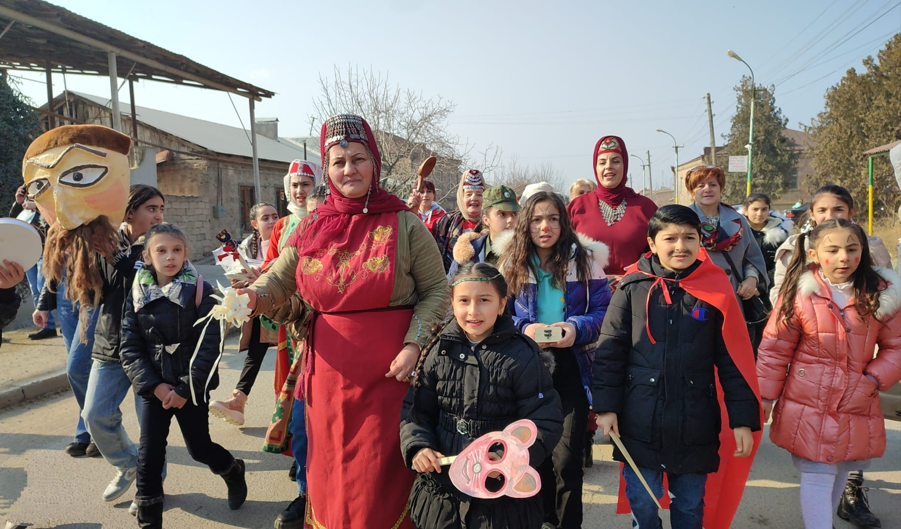

Բարեկենդանը այնքան սիրված, ժողովրդական, սպասված տոն էր, որ հայ ժողովրդի կողմից այն ընկալվել է որպես ամենաազգային («հայոց ազգի օրեր»), ինչպես նաև ամենաերջանկաբեր տոնը: «Հայոց ազգի օրերի» (Բարեկենդանի) ընդհանուր տևողությունը կենցաղում տատանվում է
մեկից մինչև երկու (երբեմն' երեք) շաբաթ: Եթե քաղաքային բնակավայրերում հիմնականում նշվում էր Բարեկենդանի միայն մեկ, այն է' երկրորդ շաբաթը, ապա գյուղական շրջաններում այն ընդգրկում էր երկու
շաբաթներն ամբողջությամբ: Տոնի վերջին կիրակին Բուն Բարեկենդան
էր համարվում ամենուր,որն այդ ծիսաշարի ամենատարածված և հատկանշական հատվածն էր, չնայած կային բնակավայրեր, ուր Մեծ Պասին նախորդող վերջին երեք օրերը ևս կոչվում էր Բուն Բարեկենդան:
Բուն Բարեկենդանի տոնը հայոց եկեղեցական տոնւսցույցով որոշակիորեն կանոնարկված է: Այն նշվում է Քրիստոսի Հարության կամ
Զատկի տոնից յոթ շաբաթ առաջ, կիրակի օրը և ունի 35 օրվա շարժականություն (փետրվարի 1-ից մինչև մարտի 7-ը):Այսպիսով՝
Պարերի, խաղերի, զվարճահանդեսների, թատերախաղերի, այցելությունների, հրապարակային խնջույքների, կերուխումերի, կատակների, ուրախության երկու շաբաթ, որոնց ընթացքում հասարակական հարաբերությունների, ընտանեկան բարքերի, հասակային խմբերի մինչ այդ ընդունված, առօրեական նորմերը գլխիվայր են շուռ գալիս, ժուժկալությունը փոխարինվում է անհագուրդ ուտել-խմելով, երիտասարդների սովորութային իրավունքով պարտադրված զուսպ, ենթակայական դիրքը տարիքավորների առաջ փոխարինվում է նրանց վարք ու բարքի համեմատական ազատությամբ, փոխվում են սոցիալական դերերը և այլն: նը, որը կենցաղում էլ հիմնականում հայտնի էր «Բարեկենդան» անունով, ուներ նաև անվանման ա յլ ձևեր (օրինակ «Բարիկենանք»' Նոր Նախիջևանում, «Փորեկենդան»' Ջավախքում, «Պա -
րեկենդա նք»' Արձակում, «Բըրգինդան» Մեղրիում, «Պարգընդընք» ' Մուսա Լեռում և այլն), որոնք համապատասխանում էին տոնի
բովանդակության ժողովրդական ընկալումներին:
Քրիստոնեական տոնացույցում հիմնական գրանցում ստացած
այս տոնն արմատներով հեթանոսական է: Բարեկենդանը խորհրդանշում էր բնության զարթոնքը և գարնան, նոր կյանքի սկիզբը և կապված էր հնագույն բնապաշտական հավատալիքների հետ։
Հարսանիքներն ու նշանդրեքները Բարեկենդանի անբաժան ուղեկիցներն էին: Դրանք, իրենց հերթին, նոր թափ էին հաղորդում տոնի հորդուն ուրախությանը: Ուրախ պարերը, որ Բարեկենդանի խնջույքների անբաժան ուղեկիցներն էին, հարսանիքներին իրենց շուրջն էին հավաքում բոլոր երիտասարդներին: Բայց միայն երիտասարդները չէ, որ մասնակցում էին պարերին: Բարեկենդանյան պարերը իրենց շրջապտույտի մեջ էին առնում կանանց ու տղամարդկանց, ընդհուպ մինչև զառամյալ ծերերը: Պարերը սկսվում էին հենց առաջին օրը և օրեցօր աշխուժանում, բազմամարդ դառնում ինչպես կատարողներով, այնպես էլ հանդիսատեսներով, խրախուսողներով: Պարում էին ինչպես զուռնա-ղհոլի նվագի տակ, այնպես էլ պարերգերի, որ բազմաթիվ էին: Ահա օրինակներից մեկը՝
Կը փոխվի այս անգամ դրվատիքը որպես թե Մրոյին կողմեն ուղղված Կրպոյին.
Ժողովրդական խաղեր ... Տոնախմբության էպիկենտրոնում գերակայողը ժողովրղական խաղերն էին, որոնց ցանկը շատ հարուստ էր: Խաղերը կազմակերպվում էին կալերում (ցերեկները), օրաներում (երեկոյան) և դաշտերում: Գոյություն ուներ խաղերի մասնակիցների սեռատարիքային որոշակի բաժանում: Երեխաներն առավելապես վեգ, կամ ճան էին խաղում, երիտասարդները գոտեմարտում էին, ձիարշավ կամ մականախաղ (ջրինղ) կազմակերպում, լախտի խաղում, իսկ հարսներն ռւ աղջիկները հիմնականում ճոճանակ կամ ճլորթի էին խաղում, որոնք նաև երգային և պարային հանդիսությունների ամենաակտիվ մասնակիցներն էին:Այդ ծիսաշարում առանձնահատուկ տեղ ունեին «Խան-Փաշա» անունը կրող խաղերը: Դրանց հիմնական սյուժեն' թուրք փաշայի կամ պարսիկ խանի նմանությամբ կերպարանափոխված և դիմակավորված անձանց թաթերականացված-ծիծաղաշարժ գործողություններն էին: Խաղային գլխավոր կերպարները, կատարելով դատավորի դեր, ծաղրում, քննադատում, դատում և տուգանում էին տարվա ընթացքում դժբախտություններ պատճառած բոլոր մեղավորներին, չմոռանալով համայնքի մեծերին' ռեսին, տանուտերին և գզիրին: Խաղի գլխավոր հայտնի էր «փաշա» կամ «խան» անունով, որն ուներ նաև զինված թիկնապահներ: Նա կրում էր թղթե կամ թաղիքե թագ, երբեմն էլ նաև քոլոզատիպ գլխարկ, թիկունքին քաշում սավան կամ ոչխարի մորթի, փորը միշտ դուրս ցցած, ձեռքին բռնած սուր ձող, որի ծայրին տատանվում էին հին լաթի կտորներ: Սովորաբար, էշով էր շրջում և ինչպես իր, այնպես էլ թիկնապահների դեմքերը մրոտված ու այլանդակված էին: Ուներ նաև արհեստական բեղ ու մորուք: Մեղավորներին նա տուգանում էր դրամով կամ բնամթերքով: Տուգանքներից գոյացած բարիքներից օգտվում էին նաև Մեծ Պասի առաջին օրը կազմակերպած ուխտագնացությունների ժամանակ: Այդ խաղերը մեծամասամբ տեղի էին ունենում Բարեկենդանի վերջին շաբաթվա ընթացքում, իսկ որոշ տեղերում' նույնիսկ Մեծ Պասի երկուշաբթի օրը: Բարեկենդանյան այդ խաղը բավական մեծ ժողովրդականություն էր վայելում, խաղի ժամանակ մի կողմ էին դրվում քաղաքավարության կանոնները, պետական և եկեղեցական օրենքները, և իշխում էր սոցիալական ու տարիքային յուրօրինակ հավասարություն:
Տոնական ուտեստի նկարագրություն ... Բարեկենդանի երկշաբաթյա տոնական ուտելիքների մեջ նախապատվությունը տրվում էր մսեղենի, կաթնեղենի, յուղի առատությանը: Ամենօրյա գործածության մեջ էին տավարի, ոչխարի, թռչնեղենի մսից պատրաստվող զանազան ճաշատեսակները, կաթնասերը, մածունը, խաշիլը, խմորեղենները: Առաջին օրերին պատրաստվում էր մեծ քանակությամբ գաթա, հալվա:
«Անոթցեր է' բարեկենդանի գաթեն միտքն է ընկի» վանեցիների առածը վկայում է Բարեկենդանին գործածվող գաթայի առատությունը:
ճաշատեսակներն, անշուշտ, պարտադիր չէին Հայաստանի բոլոր գավառների համար: Մեկ այլ տեղ գերապատվությունը տրվում էր փորը ձավարով ու զանազան համեմունքներով լցոնած և թոնիրում ամբողջովին խորոված ոչխարին, տվյալ վայրում առավել սիրված կերակրատեսակներին: Շատ էր թռչնեղենը: կային ընտանիքներ, որտեղ տասնյակից ավել հավեր, հնդկահավեր, սագեր էին մորթվում: Դրանք լցոնվում էին բրնձով, չամչով, շագանակով, խորովում, տապակում, ուղղակի խաշում էին: Պարտադիրը, սակայն, խաշիլն էր, որով սկսվում էր տոնը և որը երկու շաբաթ շարունակ պատրաստվում էր բոլոր տներում: Բարեկենդանի առավոտից երեկո տևող խնջույքները մեծ մասամբ տեղի էին ունենում բացօթյա: Չնայած ձմռան ցրտերին, դրանց մասնակցում էին շատ շատերը, խնջույքի սեղանից հեռանում էին ցանկացած պահի, միանում էին ուրիշները: Երբեմն մի վայրում կեսօրին մասնակիցների մի կազմով սկսված խնջույքը կարող էր ավարտվել բոլորովին ուրիշ կազմով, ընդ որում մասնակիցների դիրքը, տարիքը կարող էր շատ խառը լինել: Մասնակիցներից շատերը խնջույքի սեղանին ավելացնում էին խորտիկների իրենց բաժինը: Բարեկենդանի ուտելիքների տեսականու քանակը նույնպես կարևորվում էր: Դրանց թիվը գնալով աճում էր: Այսպես, Եթե Երեքշաբթի պարտադիր Երեք տեսակ ուտելիք պիտի լիներ սեղանին, հինգշաբթի' հինգ, շաբաթ' յոթ, կիրակի օրը դրանց թիվը հասնում էր տասներկուսի: Այնքան էին ուտում, որ Բարեկենդանը Երբեմն անվանում էին «փորեկենդան»:
Վերջին օրը, երեկոյան, կաթնապուր ու մածուն էին ուտում, վրայից' խաշած ձու, ասելով, «բերաններս փակում ենք սպիտակ ձվով: Աստված արժանացնի կարմիր ձվով բաց անելու» , -
ակնարկելով, որ ահա սկսվում է Մեծ պասը, որի 49 օրերի ընթացքում այլևս ձու չպիտի ուտեն մինչև Զատիկ:
Տոնի քրիստոնեական խորհուրդը ... Թեև հայոց եկեղեցին չունի հատուկ բարեկենդանյան պատարագ և արարողություն, սակայն այղ տոնի վերաբերյալ կան քրիստոնեական խորհրդին առնչվող որոշակի տարրեր: Խոսքը նախ և առաջ վերաբերում է Բուն Բարեկենդանի շարականներին, որոնցում արտացոլված են Աստծո կողմից մարդու արարման և դրախտում նրա բնակվելու իրադարձությունները: Քրիստոսը հիշատակվում է նաև որպես երկրորդ Ադամ, որի զոհաբերությամբ մարդիկ արժանի դարձան դրախտի փրկությանը: Բարեկենդանի շարականները տոնին զվարճացող մարդկանց կրկին անգամ հիշեցնում էին երկնային կյանքի' դրախտում նրանց սպասվող հոգևոր երջանկության մասին: